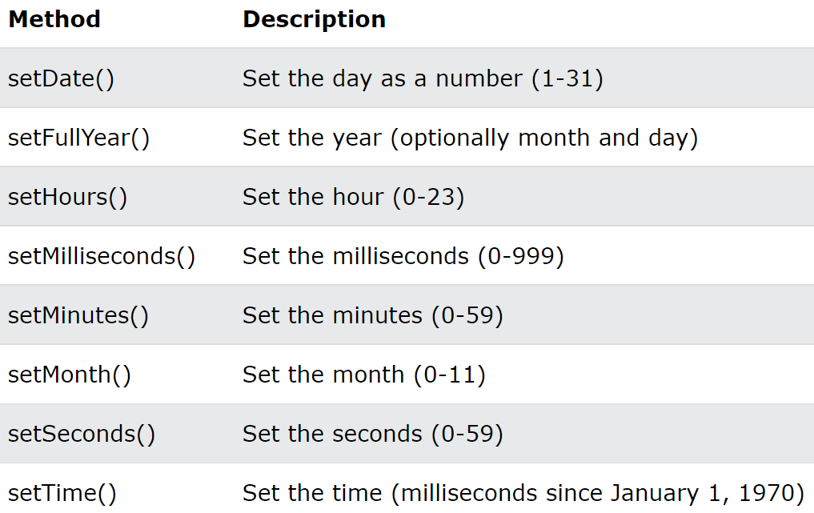

데이터를 set하는 메서드를 보통 setters, get하는 메서드를 getters라고 부른다
- Date객체에는 날짜와 시간관련 메서드들이 동일한 이름으로 구조화 되어있음

- 
1. 여러분의 생년월일로부터 오늘까지 몇일이 지났는지 출력해보세요
(optional) : 어떤 목표가 있다고 가정한후 기한을 정한후 몇일 남았는지 출력해보세요
Date()객체가 사용하기 불편한 부분이있어 이를 보완하기위해 자바스크립트 라이브러리를 많이 활용하는편
- moment.js : 순수 자바스크립트를 기반으로 날짜 데이터를 다루는 코드 라이브러리
- fullcalendar : 캘린더 ui까지 제공하는 프론트용 라이브러리, 커스터마이징이 어려운 편이어서 별도의 라이브러리 공부가 필요함